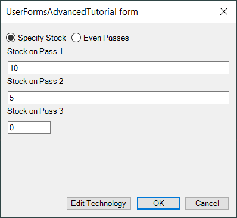
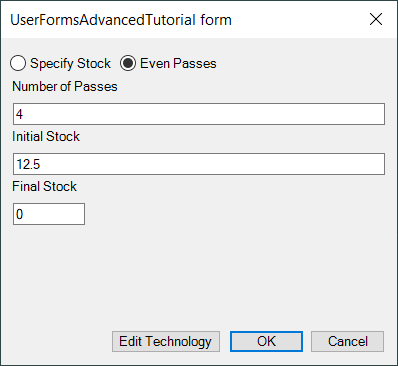

The Tutorial: More On UserForms showed how to use a form to have the user enter certain information, and actually change that form depending upon an option that the user could choose. But notice that there is a lot of wasted real estate and redundant controls on the form - each option uses a different set of 3 Label and 3 TextBox controls. This tutorial shows how could options share just one set of controls, and simply have their meaning change based on which option was chosen.
There are two RadioButton controls on the form that present the user with the option of either a fixed increment of any number of passes or with 3 passes of specified increments:
|  |  |
Remember that the (Name) property is the most critical property of each control, as well as of the form itself, because it is by this name that we refer to the control.
The properties of each control should have the following values:
| Object Type | Name |
|---|---|
| UserForm | frmUserFormsAdvancedTutorial |
| RadioButton | optEvenPasses |
| RadioButton | optSpecifyStock |
| Label | Label1 |
| Label | Label2 |
| Label | Label3 |
| TextBox | TextBox1 |
| TextBox | TextBox2 |
| TextBox | TextBox3 |
| CommandButton | cmdEditTechnology |
| CommandButton | cmdOK |
| CommandButton | cmdCancel |
Arrange the control on the form and align them if you like. When you are finished, assosiate the following event procedures with the form:
To launch the tutorial execute the following code in your main procedure: